Windshield installation (All models)
1. Front windshield glass installation
1. Clean the front windshield glass using the unleaded gasoline.
2. Clean the body panel using the unleaded gasoline.
Note
- Clean the bonding surface of the front windshield glass.
- Wipe off the caulking material remaining on the body with a soft cloth and lead-free gasoline.
3. Apply the primer to the body.
Note
- Apply Sunstar BP-901 or equivalent to the bonding surface on the body side.
- Apply the following primer application width: 23 mm {0.91 in} or longer for the upper section; 20 mm {0.79 in} or longer for side section; 25 mm {0.98 in} or longer for lower section.
4. Install the spacer to the body.
Note
- Use a new spacer.
- Spacer
- Application area of primer: 23 mm {0.91 in}, upper section
- Application area of primer: 20 mm {0.79 in}, side section
- Application area of primer: 25 mm {0.98 in}, lower section
5. Install the spacer to the front windshield glass.
Note
- Use a new spacer.
6. Install the molding to the front windshield glass.
Note
- Use a new molding.

- Molding
- Windshield support
- Spacer
- 26 mm {1.02 in}
- Spacer positioning mark
7. Apply the primer to the front windshield glass.
Note
- Apply Sunstar penguinseal #560 or equivalent to the bonding surface on the front windshield glass side.
- The width of primer application shall be 16.5 mm {0.65 in} to 25 mm {0.98 in} from the edge of the front windshield glass.
- Sealing agent
- Application location of the primer
- 11 mm {0.43 in}
- 2 mm {0.08 in}
- 11 mm {0.43 in}
- 25 mm {0.98 in} for upper edge area, 20.5 mm {0.81 in} for side edge area, 25 mm {0.98 in} for lower edge area
- 11 mm {0.43 in} for center position, 8 mm {0.31 in} for side position
- 15 mm {0.59 in}
- 27 mm {1.06 in}
- 5 mm {0.20 in}
- 22 mm {0.87 in}
- Molding
8. Apply the sealing adhesive to the front windshield glass.
Note
- When using an air spray gun, air pressure must be kept lower than the specified value.
Specified air pressure： 147 to 294 kPa { 1.5 to 3.0 kgf/cm2 / 21 to 43 psi } or less
Note
- After the primer completely dries, apply the sealing material, Sunstar penguinseal #560 or equivalent, along the edge of the front windshield glass so that the sealing material forms the bonding area of 20 mm {0.79 in} at the right lower section of the front windshield glass.
- Molding
- Windshield support
- Spacer
- Sealing agent
- 20 mm {0.79 in}
Caution
- After applying the primer, leave it for at least 1 minute for air drying.
- Bonding must be accomplished within 5 minutes after the sealing material is applied.
9. Install the front windshield glass to the body.
Note
- Adjust the front windshield glass position with a suction cup.
- Install the front windshield glass to the sealing material applied to the entire edge of the body panel.
- Insert the windshield support into the installation hole of the body panel, and then press the front windshield glass to the panel to install it.
- Windshield support
- Installation hole
10. Clean the body panel using the unleaded gasoline.
Note
- Wipe off the protruded sealing material with lead-free gasoline and a soft cloth.
- Keep the bonding surface temperature at the following temperature for 24 hours.
： 20 to 30 ℃ { 68 to 86 °F }
Note
- Confirm that there is no water leakage from the front windshield glass.
2. Room mirror installation
1. Install the room mirror to the front windshield glass.
Note
- Install the screws.
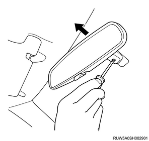
3. Cowl cover installation
1. Install the cowl cover to the body.
Note
- Install the washer hose.
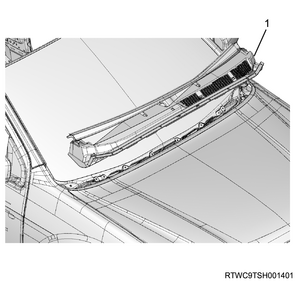
- Cowl cover
4. Engine hood rear seal installation
1. Install the engine hood rear seal to the cowl cover.
Note
- Install the engine hood rear seal to the hook of the cowl cover.
- Install the clip.
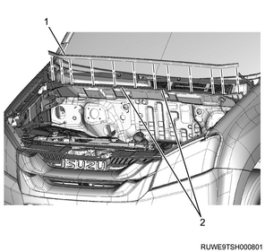
- Engine hood rear seal
- Hook
5. Side cowl cover installation
1. Install the side cowl cover to the body.

- Side cowl cover
6. Wiper arm installation
1. Install the wiper arm to vehicle.
Caution
- Confirm that the wiper motor is stopped at the auto stop position.
Tightening torque： 31.0 N・m { 3.2 kgf・m / 22.9 lb・ft }

- 29 mm (1.14 in)
- 36.5 - 51.5 mm (1.44 - 2.03 in)
- 18 mm (0.71 in)
7. Wiper arm cover installation
1. Install the wiper arm cover to the wiper arm.
8. Instrument panel installation
1. Install the instrument panel assembly and reinforcement to vehicle.
Note
- Tighten the bolts and nuts that secure the instrument panel and reinforcement assembly to the specified torque.
Tightening torque： 19 N・m { 1.9 kgf・m / 14 lb・ft } Bolt
Tightening torque： 8 N・m { 0.8 kgf・m / 6 lb・ft } Nut

Note
- Tighten the 4 bolts that secure the steering column to the reinforcement to the specified torque.
Tightening torque： 20 N・m { 2.0 kgf・m / 15 lb・ft } Steering column bolt
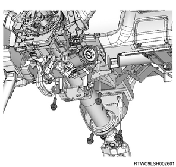
Note
- Connect the dash harness connector.
2. Install the side cover to the instrument panel.
Note
- Install the left and right side covers.

- Right side cover
- Instrument panel
3. Install the speaker grille to the instrument panel.
Note
- Install the left and right speaker grilles.
9. Control lever assembly installation
Note
- The following does not apply to auto A/C
1. Install the control lever assembly to the instrument panel.
Note
- Connect the harness connector and the mode adjust cable.
- Install the clips at 4 corners and push them.

- Instrument panel
- Control lever assembly
- Glove box
- Instrument panel assist-side lower cover
10. Control cable installation
1. Adjust the control cable.
Note
- Adjust the air source control cable.
- Set the air source select lever to the "FRESH" position on the left side.

2. Install the control cable to the blower assembly.
Note
- Install the control cable to the link section of the blower assembly.
- Connect the control cable to the lock clamp section.
- After installation, inspect the operation of the control lever assembly.
11. Control panel assembly installation
Note
- The following applies to auto A/C
1. Install the control panel assembly to the instrument panel.
Note
- Connect 1 harness connector.
- Install the clips at 4 corners and push them.

- Instrument panel
- Control panel assembly
12. Sun sensor installation
1. Install the sun sensor to the front cover.
2. Connect the harness connector to the sun sensor.
3. Install the sun sensor to the instrument panel.
Note
- Install it to the instrument panel together with the front cover.

- Sun sensor
- Front cover
- Instrument panel
13. Front cover installation
Note
- The following does not apply to auto A/C
1. Install the front cover to the instrument panel.

- Front cover
- Instrument panel
14. Instrument panel cluster installation
1. Install the instrument panel cluster to the instrument panel.

- Instrument panel cluster
15. Passenger air bag assembly installation
1. Install the passenger air bag assembly to the instrument panel.
Note
- Press the portion indicated by the arrow in the illustration to install it to the instrument panel.
- Securely fit the claws.

Note
- Install the 2 bolts.
Tightening torque： 25 N・m { 2.5 kgf・m / 18 lb・ft }

- Passenger airbag mounting bolts
16. Assist side lid cover installation
1. Install the assist side lid cover to the instrument panel.
Note
- Install the 2 screws.
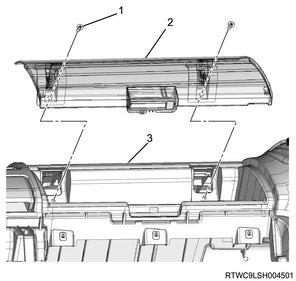
- Screw
- Assist side lid cover
- Instrument panel
17. Steering cowl installation
1. Install the steering cowl to the steering column.
Caution
- When installing the steering cowl, be careful not to pinch the harness by the cowl.
Note
- Install the steering cowl upper to the steering column.
- Install the steering cowl upper mounting screws to the steering cowl upper.
- Install the steering cowl lower to the steering column.
- Install the steering cowl lower mounting screw to the steering cowl lower.
- Models without PESS

- Steering cowl upper
- Steering cowl lower mounting screw
- Steering cowl lower
- Steering cowl upper mounting screw
Note
- Models with PESS

- Steering cowl upper
- Steering cowl lower mounting screw
- Steering cowl lower
- Steering cowl upper mounting screw
18. Instrument panel driver-side lower cover installation
1. Install the instrument panel driver-side lower cover to the instrument panel.
Note
- Connect the switch connector.
- Install the DLC.
- Models without PESS

- Instrument panel driver side lower cover
- DLC
Note
- Models with PESS

- Instrument panel driver-side lower cover
- DLC
2. Install the fuel filler lid opener lever to the instrument panel driver-side lower cover.
Note
- Install the 2 fixing screws.

- Fuel filler rid opener lever
- Fuel filler rid cable
- Screw
3. Install the hood lock control lever to the instrument panel driver-side lower cover.
Note
- Install the 2 fixing screws.
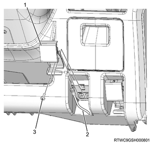
- Hood lock control lever
- Control cable
- Screw
19. Meter cluster installation
1. Install the meter cluster to the instrument panel.
Note
- Connect the switch connector.

- Clip
20. Steering wheel installation
1. Install the steering wheel to the steering shaft.
Note
- Line up the setting applied during removal, and install the steering wheel.

Caution
- Never apply an impact to the steering wheel with a hammer, etc. to install it.
- The steering shaft is designed to absorb shocks.
2. Install the nut to the steering shaft.
Tightening torque： 35 N・m { 3.6 kgf・m / 26 lb・ft }
21. Driver air bag assembly installation
1. Install the connector to the driver air bag assembly.
Note
- Connect the airbag connector.
- Connect the horn connector.
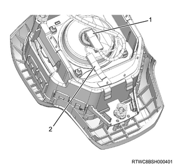
- Airbag connector
- Horn connector
2. Install the driver air bag assembly to the steering wheel.
22. Battery ground cable connect
1. Connect the battery ground cable to the battery.
23. SRS control unit setting
1. Reactivate the SRS function.
Note
- Install the SRS fuse to the fuse relay box or connect the battery ground cable to the battery.
- Turn the ignition switch on, and confirm that the SRS airbag warning light turns off after blinking 7 times.
24. Instrument panel assist-side lower cover installation
1. Install the instrument panel assist-side lower cover to the instrument panel.
Note
- Install the 4 screws.

25. Glove box installation
1. Install the glove box to the instrument panel.

- Glove box
- Instrument panel assist side lower cover
26. Console box installation
1. Install the console box to the floor.
Note
- Install the 2 clips and the 1 screw.
- Open the console box cover and install 2 screws.
- Install the parking brake cover to the console box.
- The following applies to the 2WD model.
2. Install the cover to the console box.
Note
- The following applies to the 4WD model.
- Connect the 4WD switch connector.
3. Install the 4WD switch to the console box.
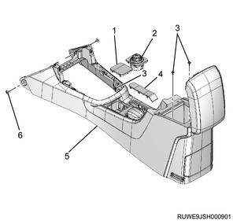
- Cover (2WD models)
- 4WD switch (4WD models)
- Screw
- Parking brake cover
- Console box
- Clip
4. Install the shift console cover to the console box.
Note
- Connect the cigarette lighter connector.
- The following applies to the manual transmission.
5. Install the shift lever knob to the shift lever.
Note
- The following applies to the manual transmission.

- Shift lever knob
- Shift console cover
- Cover (2WD models)
- 4WD switch (4WD models)
Note
- The following applies to the automatic transmission.

- Shift console cover
- Cover (2WD models)
- 4WD switch (4WD models)
27. Head lining installation
1. Install the head lining to vehicle.
Note
- With the aid of an assistant, carefully slide the head lining in through the rear of the vehicle.
- Secure the head lining with the 4 clips.
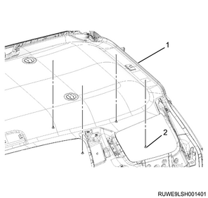
- Head lining
- Clip
Note
- The following applies to models equipped with exciter speaker
- Connect the exciter harnesses.

- Exciter harness
- Exciter
Note
- The following applies to models equipped with rear cooler
- Temporally install the lower of the rear cooler duct opening to the quarter pillar duct, then the upper of the rear cooler duct opening. Firmly push the rear cooler duct with the head lining onto the quarter pillar duct.
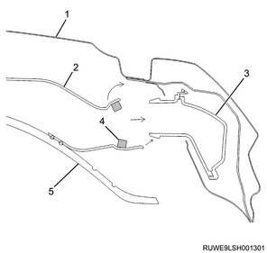
- Roof panel
- Rear cooler duct
- Quarter pillar duct
- Seal
- Head lining
28. Sunvisor holder installation
1. Install the sun visor holder to the head lining.
Note
- Install the screws.
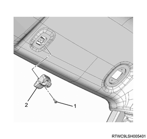
- Screw
- Sun visor holder
29. Sun visor installation
1. Install the sun visor to the head lining.
Note
- Install the 2 fixing screws.

- Screw
- Sun visor
30. Assist grip installation
1. Install the assist grip to the head lining.
Note
- Install the 2 fixing screws and close the cover.

- Assist grip
- Screw
31. Overhead console installation
1. Install the over head console to the head lining.
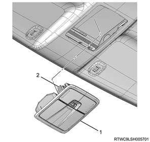
- Overhead console
- Metal clip
32. Map light installation
1. Install the map light to the head lining.
Note
- Connect the harness connector.

33. Rear cooler control switch installation
1. Install the rear cooler control switch to the head lining.
Note
- Connect the harness connector.
- Push in until the 2 claws engage.

- Harness connector
- Rear cooler control switch
34. Dome light installation
1. Install the dome light to the head lining.
Note
- Connect the harness connector.
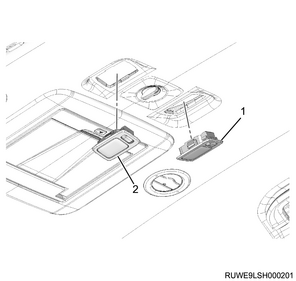
- Dome light (RH)
- Dome light (LH)
2. Install the bezel to the head lining.
Note
- This procedure is applicable to the vehicle with the display.

- Bezel
35. Luggage room light installation
1. Connect the harness connector to the luggage room light.
2. Install the luggage room light to the head lining.
Note
- Ensure that the switch is facing toward the left side of the vehicle.

- Head lining
- Luggage room light
36. Upper quarter trim cover installation
1. Install upper quarter trim cover to the quarter panel.
Note
- Tighten the screw and install the cover.
2. Install the bezel to the quarter panel.
Note
- Insert the seat belt through the opening in the bezel.
3. Install the seat belt lower anchor bolt to the floor.
Note
- Install the 2nd and 3rd seat belt lower anchor bolts
Tightening torque： 46 N・m { 4.7 kgf・m / 34 lb・ft }
4. Install the assist grip to the quarter panel.
Tightening torque： 7 N・m { 0.7 kgf・m / 62 lb・in }

- Upper quarter trim cover
- Screw
- Cover
- Bezel
- Screw
- Assist grip
- Cover (For vehicle with curtain airbag)
- Screw (For vehicle with curtain airbag)
- Cover
- Screw
- Bezel
37. Lower quarter trim cover installation
1. Install the lower quarter trim cover to the quarter panel.
Note
- Tighten the screw and install the cover.
2. Install the luggage hook to the quarter panel.
Tightening torque： 8 N・m { 0.8 kgf・m / 6 lb・ft }

- Luggage hook
- Screw
- Cover
- Cover
- Screw
- Lower quarter trim cover
3. Install the accessory socket to the lower quarter trim cover.
Note
- This procedure is applicable to the vehicle with the accessory socket.

- Cover
- Accessory socket
38. Luggage rear trim installation
1. Install the luggage rear trim to the floor.

- Luggage rear trim
39. Tail gate weather strip installation
1. Install the buffer to the body.
Note
- Before installing the weather strip, install the buffer to the lower notch at body flange so as not to damage the painted surfaces.
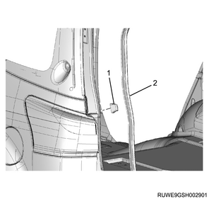
- Buffer
- Weather strip
2. Install the tail gate weather strip to vehicle.

- Tail gate weather strip
40. Center pillar upper trim cover installation
1. Install the center pillar upper trim cover to the center pillar.
Note
- Tighten the screw and install the cover.
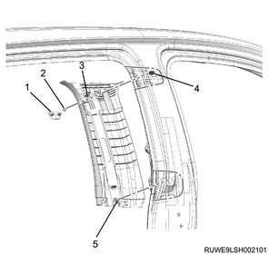
- Cover
- Screw
- Clip
- Retainer
- Clip
41. Center pillar lower trim cover installation
Note
- The following applies to models with pretensioners and models without airbags.
1. Install the center pillar lower trim cover to the center pillar.
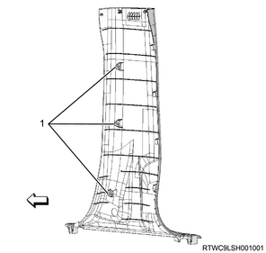
- Clips
Note
- Install the seat belt lower anchor bolt to the center pillar.
Tightening torque： 46 N・m { 4.7 kgf・m / 34 lb・ft }

- Seat belt lower anchor bolt
Note
- The following applies to models with lap pretensioners.
2. Install the center pillar lower trim cover to the center pillar.
Note
- Move the center pillar lower trim cover and install to the bezel rubber through the lap pretensioner.

- Bezel rubber
Note
- Install the center pillar lower trim cover.
- Clips
3. Install the tongue side seat belt to the lap pretensioner.
Note
- Install the tongue plate to the lap pretensioner.
- Close the cover and tighten the screw.
Tightening torque： 6 N・m { 0.6 kgf・m / 53 lb・in }

- Seat belt
- Tongue plate
- Screw
- Cover
- Lap pretensioner
42. Front tongue side seat belt installation
1. Install the seat belt upper anchor bolt to the center pillar.
Tightening torque： 46 N・m { 4.7 kgf・m / 34 lb・ft }
2. Install the adjuster cover to the center pillar.

- Adjuster cover
- Seat belt upper anchor bolt
43. Dash side trim pad installation
1. Install the dash side trim pad to the body.
Note
- Install the nut.

44. Front pillar trim cover installation
1. Install the front pillar trim cover to the front pillar.
Note
- Insert the lower part of the front pillar trim cover.
- Install the assist grip.
- Install the 2 fixing screws and close the cover.
Caution
- Do not apply excessive force to the upper portion of the front pillar trim cover. It causes the white-mark occurring at appearance surface.

45. Rear door finisher installation
1. Install the rear door finisher to the body.

- Rear door finisher
46. Front door finisher installation
1. Install the front door finisher to the body.

- Front door finisher
47. Sill plate installation
1. Install the sill plate to the floor.
Note
- Install the front sill plate.

- Front sill plate
Note
- Install the rear sill plate.

- Rear sill plate